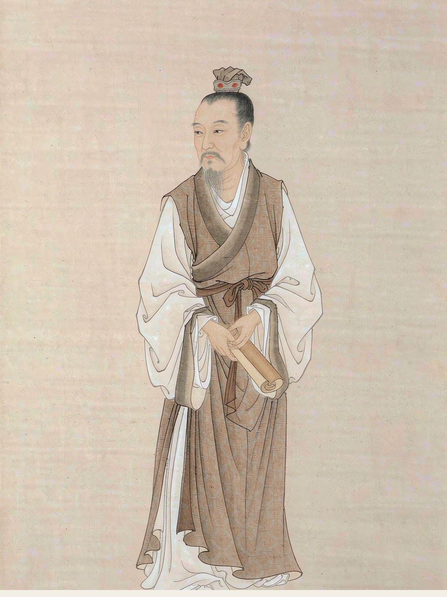

唐代诗人
字义山，号玉溪生，晚唐著名诗人。擅长律绝，诗风秾丽深婉，尤工无题诗，寄托遥深。
李商隐 · 七言律诗
锦瑟无端五十弦，一弦一柱思华年。 庄生晓梦迷蝴蝶，望帝春心托杜鹃。 沧海月明珠有泪，蓝田日暖玉生烟。 此情可待成追忆，只是当时已惘然。
李商隐 · 七言绝句
君问归期未有期，巴山夜雨涨秋池。 何当共剪西窗烛，却话巴山夜雨时。
相见时难别亦难，东风无力百花残。 春蚕到死丝方尽，蜡炬成灰泪始干。 晓镜但愁云鬓改，夜吟应觉月光寒。 蓬山此去无多路，青鸟殷勤为探看。